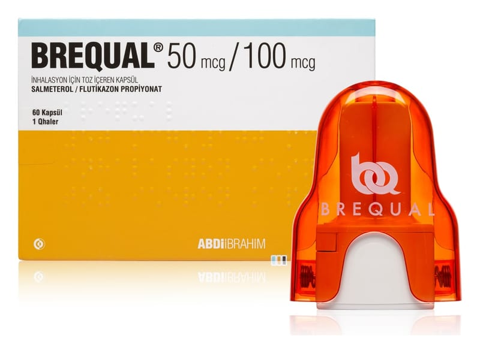

Brequal 50 mcg / 100 mcg İnhalasyon İçin Toz İçeren Kapsül, 60 Kapsül

Ne için kullanılır
KT · Bölüm 1• BREQUAL, etkin madde olarak salmeterol ve flutikazon içerir. • Salmeterol, bronkodilatör ler (bronş ge nişleticiler) adı ve rilen ilaç grubunun bi r üyesidir ve akc iğe rlerdeki ha va yol larının duvarlarında bulunan ka sları gevşeterek genişlemelerini sağlar. • Flut ika zon ise kortikosteroi dl er adı ve rilen ilaç grubuna aittir ve yangı (iltihap, enflamasyon) giderici etkisi ol duğundan, akciğerlerdeki ha va yollarının duvarlarında ol uşan şişme ve hassasiyeti azaltarak ne fes alıp ve rme sorunlarını rahatlatır.
BREQUAL, 50 mcg salmeterol'e eşdeğer salmeterol ksinafoat ve 100 mcg flutikazon propiyonat içeren 60, 120 ve 180 adet inhaler kapsül içeren ambalajlarda bulunur ve 1 adet Qhaler inhalasyon cihazı içermektedir.
BREQUAL aşağıdaki durumlarda kullanılır: • Astım semptomlarının düzeltilmesi ve kontrol altına alınması amacıyla. Astım hastalığının basamaklı tedavisinde 3. basamaktan itibaren verilir. • Düzenli tedavide orta ve ağır KOAH’lı [(kronik obstrüktif (tıkayıcı) akciğer hastalığı)]
hastalarda belirtilerin ve atak sıklığının azaltılmasında. BREQUAL, başlamak üzere olan nefes darlığı ve hırıltıyı durdurmaya yardımcı olur. Nefes darlığı veya hırıltılar başlamışsa işe yaramayacaktır. Bunun olması halinde, salbutamol gibi hızlı etkili, “kurtarıcı” ilaçlar kullanmanız gerekir. Hızlı etkili, “kurtarıcı” ilacınızı her zaman yanınızda taşıyınız.
Normalden daha sık nefes darlığı yaşıyorsanız veya hırıltılarınız artmışsa veya hızlı etkili kurtarıcı ilacınızı normalden daha sık kullanıyorsanız doktorunuza görünmelisiniz.